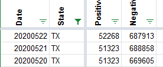
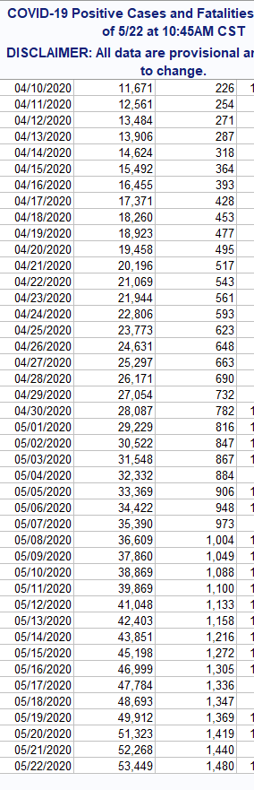
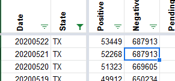

Couple issues with Texas data 5/21 and 5/22
Issue number 444
johndhancock opened this issue on May 22, 2020 at 9:40 pm
Looks like there were no positives captured for Texas on 5/21 (same figure as 5/20) and no testing figures are odd for 5/22 (total same as 5/21, negatives went down from 5/21, no new tests figure)
Comments
johndhancock commented on May 22, 2020 at 10:41 pm
Awesome. Thanks for the quick work!
Hi John, Thanks for letting us know. We are sorting out the separation of the PCR tests from the Antibody tests that were recently reported and updating our historical data so there were a few bumps. One of the challenges is that there isn’t a total PCR number for right now, so we have to use yesterday’s numbers until we get a new total PCR. I smoothed out some of what you pointed out. It should be reflected on the site & API shortly.
CTP Before 
Texas CSV 
CTP After 
See also Issue #442